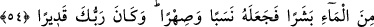
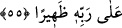
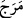
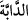
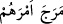
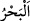
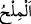

TATLI VE ACI İKİ DENİZ ARASINA
SINIR KOYAN O’DUR
53. Birinin suyu tatlı ve susuzluğu giderici, diğerininki tuzlu ve acı iki denizi
salıveren ve aralarına bir engel, aşılmaz bir sınır koyan O’dur.
54. Sudan (meniden) bir insan yaratıp onu nesep ve sıhriyet (kan ve evlilik
bağından doğan) yakınlığa dönüştüren O’dur. Rabbinin her şeye gücü yeter.
55. (Böyle iken müşrikler) Allah’ı bırakıp kendilerine ne fayda ne de zarar
verebilen şeylere kulluk ediyorlar. İnkârcı da Rabbine karşı uğraşıp durmaktadır.
“Birinin suyu tatlı” hoş“ve” çok tatlı olduğu için “susuzluğu giderici, diğerininki
tuzlu ve acı” tuzluluğu çok fazla “iki denizi salıveren” tıpkı atların meraya salındığı
gibi Allah, bu iki denizi mecraları birleşik olduğu halde, suları birbirlerine
karışmayacak şekilde salıveren O’dur. “__WORD__
” hayvanı bıraktı ve salıverdi. “__WORD__
işlerini karıştırdı, demektir. Karıştırma demek olduğunda mânâ, ‘iki denizi birbirine
yaklaştırıp bitiştirerek birbirine karıştıran’ olur. “__WORD__ çoğuna göre tatlı olsun tuzlu
olsun çok su demektir. Asıl anlamı çok suyu toplayan geniş yer, demektir. Nitekim el-
Müfredât’ta böyle geçmektedir.
Aralarında şiddetli bir yakınlık olmasına rağmen, her ikisine de yakınlık bildiren “bu”
zamiri ile işâret edilmesi iki denizin birbirinden ayrı olmasına delâlet eder. Bu âyetin
“İki denizi birbirine kavuşmak üzere salıvermiştir..” (er-Rahmân, 55/19) âyetiyle
mukayyed/kayıtlanmış olması da muhtemeldir.
Tıybî der ki: “Suyun “__WORD__ diye isimlendirilmesinin sebebi; kalbdeki susuzluğu
kestiğinden dolayıdır.” Kûfe’nin nehrine “__WORD__ (Fırat)” denilmesinin sebebi de budur.
Bu, rum diyârından (Anadolu) çıkan suyu tatlı büyük bir nehirdir. el-Melekût’ta der ki:
“Bu nehrin kaynağı Kalika köylerinden bir köydedir. Kûfe’ye iner. Bir kolu Dicle ile
birleşir, diğer bir kolu da İran körfezine dökülür.”
Râğıb der ki: “__WORD__ tadı bilindiği şekilde değişen ve katılaşan suya denir. Tadı